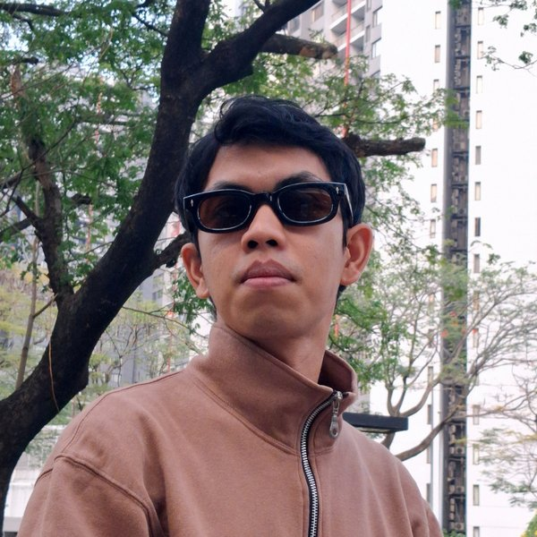

Content Research Lead di Duduk Cerita
Bagi Gibran, belajar hal baru itu menyenangkan, apalagi kalau bisa membantunya berkembang dalam kehidupan sehari-hari dan pekerjaan. Ketertarikannya yang mendalam pada Psikologi dan Filsafat membuat empati dan cara berpikir kritisnya lebih terarah. Dari situ ia belajar memahami manusia, baik sebagai individu, dalam kelompok, maupun dalam hubungannya dengan diri sendiri, orang lain, dan lingkungannya.
Gibran memulai karier sebagai Analis Lab selama tujuh tahun. Di sana ia terbiasa dengan penelitian kualitatif dan kuantitatif serta berbagai trial di laboratorium. Ia kemudian beralih menjadi Behaviour Therapist dan sudah menjalaninya lebih dari dua tahun. Observasi, wawancara atau konseling, dan perancangan intervensi menjadi kegiatannya sehari-hari.
Selain itu, Gibran meluangkan waktu untuk menjadi konselor dan mentor penelitian bagi mahasiswa S1. Kini ia bergabung dengan Duduk Cerita untuk berbagi pengalaman, belajar hal baru, dan, yang terpenting, ikut berkontribusi meningkatkan kesadaran akan kesehatan mental di Indonesia. Di waktu luang, ia suka membaca buku, menonton film, dan berolahraga secara rutin.
“We are what we are because we have been what we have been, and what is needed for solving the problems of human life and motives is not moral estimates but more knowledge.” — Sigmund Freud